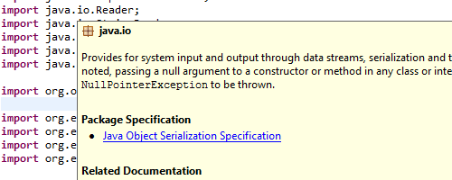
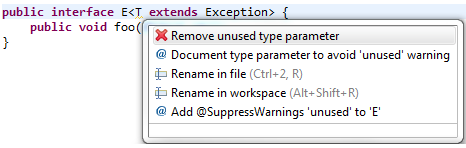

@NonNull:
- If the field is not properly initialized to a non-null value.
- If a value is assigned to the field that is not known to be non-null.
In return to these obligations, dereferencing a @NonNull field is regarded as always safe.
If a field is marked as @Nullable, generally every direct dereference
of the field is flagged as a potential null pointer access. Even a null check for such a field is not
a perfect protection due to dangers of side effects, effects via aliased references, and concurrency.
As a compromise between safety and convenience, the compiler can be configured to apply
"syntactic null analysis for fields".
With this option enabled, the compiler syntactically recognizes
a narrow range of code patterns where a null-check of a field is directly followed by
a dereference or an assignment to a @NonNull variable. For these particular situations,
no problem will be reported.
In the following example, the check in line 12 properly protects the access in line 13, whereas
the knowledge that field nullable holds a non-null value (in line 15) is spoiled by
the intermediate statement in line 16.

This is the option that enables the syntactic analysis (under the heading Java Compiler > Errors/Warnings):




The suggested package name is the name of the project if the source folder does not contain any package and if the project name is a valid package name. In case of type creation wizards, if the source folder contains exactly one package then the name of that package is used as the suggested package name.
The category editor creates a category.xml that can define categories that the contents of a p2 repository should be organized into. Previously only features could be specified as belonging to a category and be visible to users. Now individual bundles can be added to the category.xml.

If you are using Equinox Adapter hooks to load additional libraries at runtime you can use this API to add the correct libraries to the classpath at build time.

This behaviour can be enabled in 4.2.2 by setting the system property pde.lockWorkspaceForClasspath to true.
Filters are specified in the task using the same property as the analysis task. Set the filters attribute on the apitooling.apiuse task, specifying the root directory of API filter files. Each filter file must be in a folder with a filename matching the component name the filter file applies to.